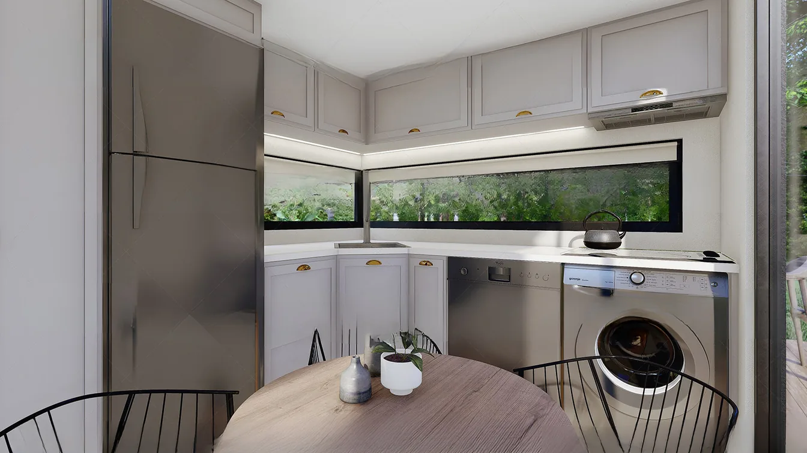

Tiny houses for Switzerland
Built to our own specification: eight tiny-house models, bespoke furniture, structured permit guidance and project-specific delivery.
MODUNERA delivers tiny houses to Switzerland once the model, route, documents, access and unloading are approved. The site must be checked with the competent authority before ordering; we provide project documents but do not replace local legal or permit advice.
Tiny-house specialisation backed by broad manufacturing capability.
Tiny houses remain our core business. Modular buildings, steel structures, bungalows and bespoke furniture extend the possibilities for private and commercial projects.
Eight base models
A faster starting point without excluding customisation.
In-house furniture
Built-ins are planned together with the layout and services.
Digital project start
Configurator, location pages and WhatsApp shorten the initial qualification.
European logistics
Road, low-loader and combined ferry/Ro-Ro routes are compared.

What to check first in Switzerland.
In Switzerland, buildings and installations generally require an official permit before they are erected or altered. Even provisional projects may require approval; exemptions and procedures are set by cantonal and communal law.
Read country guide →Official source ↗Choose a place or region.
Local pages bring together search intent, climate, use, permission and delivery without implying authority approval.
Aargau
Regional planning & project check
4 placesAppenzell Innerrhoden
Regional planning & project check
12 placesAppenzell Ausserrhoden
Regional planning & project check
167 placesBern
Regional planning & project check
44 placesBasel-Landschaft
Regional planning & project check
3 placesBasel-Stadt
Regional planning & project check
52 placesFribourg
Regional planning & project check
31 placesGenève
Regional planning & project check
11 placesGlarus
Regional planning & project check
53 placesGraubünden
Regional planning & project check
18 placesJura
Regional planning & project check
61 placesLuzern
Regional planning & project check
27 placesNeuchâtel
Regional planning & project check
9 placesNidwalden
Regional planning & project check
7 placesObwalden
Regional planning & project check
69 placesSt. Gallen
Regional planning & project check
12 placesSchaffhausen
Regional planning & project check
43 placesSolothurn
Regional planning & project check
27 placesSchwyz
Regional planning & project check
46 placesThurgau
Regional planning & project check
58 placesTicino
Regional planning & project check
10 placesUri
Regional planning & project check
108 placesVaud
Regional planning & project check
64 placesValais / Wallis
Regional planning & project check
9 placesZug
Regional planning & project check
364 placesZürich
Regional planning & project check
Fast answers, clear limits.
Yes, deliveries to Switzerland are offered on a project basis. Model, dimensions, weight, route, customs status, final access and unloading must be approved first.
In Switzerland, buildings and installations generally require an official permit before they are erected or altered. Even provisional projects may require approval; exemptions and procedures are set by cantonal and communal law.
Only if the trailer, documents, insurance, dimensions and weights comply along the full route. Otherwise delivery is planned on a low-loader or as special transport.
A Ro-Ro or ferry leg may form part of the route. Availability, port, schedule, handling and onward road delivery are confirmed only for the actual model and destination.
For EU destinations, the EU–Türkiye Customs Union and A.TR proof may be relevant depending on tariff classification and customs status. Import VAT, product requirements and national approval remain separate checks; Switzerland uses a separate customs process.
Yes. Tiny houses are the core product; kitchens, bathrooms, stairs, storage and contract furniture are made to measure within structural, weight, services and transport limits.
Start on WhatsApp and include the destination, intended use, number of occupants, preferred size and budget. Complete information shortens the preliminary review.
Tiny house in Switzerland: the 20 most common questions.
Twenty tiny house questions per country — permits, delivery, customs, connections, winter use, cost and letting. The answers are project orientation and do not replace a ruling from the responsible authority.
As a rule, yes. Once a unit stands permanently in one place and is used for occupation, Switzerland treats it in planning law as a structure. the municipality together with the canton is responsible. Whether a procedure applies, and which one, is decided at the specific plot — not by the product.
the municipality together with the canton. MODUNERA supplies the building and the technical documentation; the decision on admissibility, procedure and conditions rests entirely with that body. Get the answer in writing before you order.
the municipal land-use plan and the zoning ordinance governs. It sets the permissible type of use, the way of building, the buildable area and the servicing. A plot with the wrong designation for your project cannot be rescued by any technical solution.
Permanent living is possible inside the building zone where the zone permits residential use and the Baubewilligung is granted. Outside the building zone, living is admissible only in narrowly defined exceptions — the most common reason Swiss projects fail.
Camping and holiday zones have their own rules, often with limits on length of stay. In tourist municipalities, second-home regulations apply on top.
Permanent placement decides in Switzerland too. If the unit stays and is lived in, it requires approval — the wheels change nothing.
As project orientation we work with roughly 7,900 € ex works to the agreed point in Switzerland. The figure includes handling at the EU external border. The final amount depends on route, access, crane requirement and date; a freight commitment only exists with the checked quotation.
The unit travels whole on a low-loader. The route runs overland with border clearance on entry into Switzerland; for alpine sites the mountain approach to the plot has to be checked early. The exact date is fixed together with the unloading point, because in practice the last hundred metres cause more trouble than the route.
Switzerland is not part of the EU customs union. Import means clearance, import tax and handling charges; your customs agent confirms the items before delivery.
Swiss VAT at the standard rate of 8.1 per cent applies on import. As of 2026-08-14. The rules in force at the time of delivery govern; the tax treatment of your specific case is for your tax adviser to confirm.
Pad, strip or screw foundation, depending on soil, frost depth and what the permit requires. Frost depth and snow load rise markedly with altitude; founding is specified by municipality, not by country. The work is carried out locally; we supply the load assumptions and bearing points.
Up to the plot boundary by the local utilities, from there by local trades. Cost is driven almost entirely by the distance to the existing network. The municipality sets connection conditions and fees; in scattered settlements the distances can be the single largest cost block.
Inside the building zone a connection is generally expected. Autonomous solutions are conceivable in special cases and with cantonal agreement.
Yes, and Switzerland demands the most differentiated specification: snow load and heating season differ substantially between Ticino and 1,500 metres. Insulation thickness, glazed area, ventilation and heating system are decided together before production, not retrofitted.
By heating season, snow load zone and wind zone at the actual address. Alpine sites are insulated considerably more heavily and the roof load assumption is set higher than on the Mittelland. A build-up that is enough for a summer unit is too thin for permanent living at the same address.
Ex-works base plus delivery gives the first number; foundation, connections, unloading, local planning, permit fees and insurance come on top. Count these from the start, or the budget moves after the order is placed.
MD 6 is the most common choice in Switzerland — a pitched roof for snow shedding and a build-up for long heating seasons. On the Mittelland, MD 1 follows.
Short-term letting is regulated at cantonal and municipal level; in tourist municipalities second-home and visitor-tax rules apply as well.
Transport cover for the delivery, building or natural-hazard cover for operation, and operator liability if you let it. Settle cover before delivery — afterwards your negotiating position is worse.
Five things: a written answer from the municipality together with the canton on admissibility; access and unloading point with photographs and dimensions; servicing and the distance to the network; the type of use with the number of people; and the budget range including the secondary items. With those five, an enquiry becomes a plannable project.
As of 2026-08-14. All figures are non-binding project guidance and not legal, authority, structural, energy or tax advice. Prices are ex-works indications; only a checked quotation is binding.